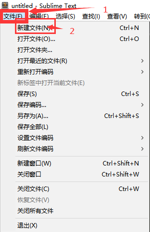
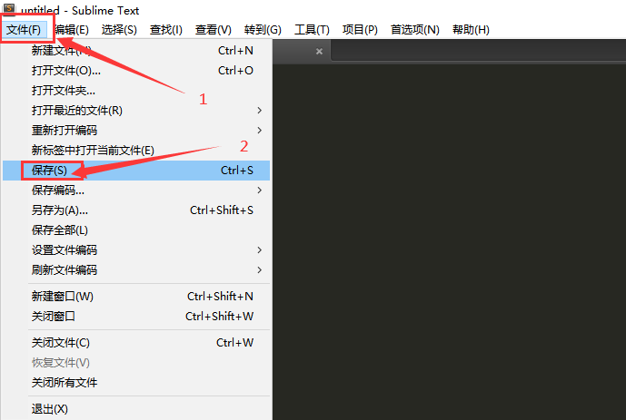
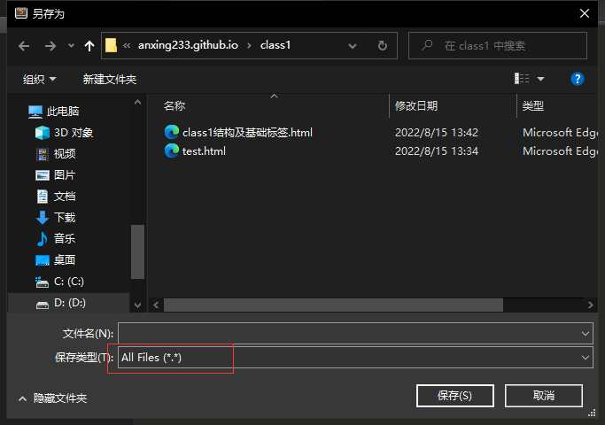
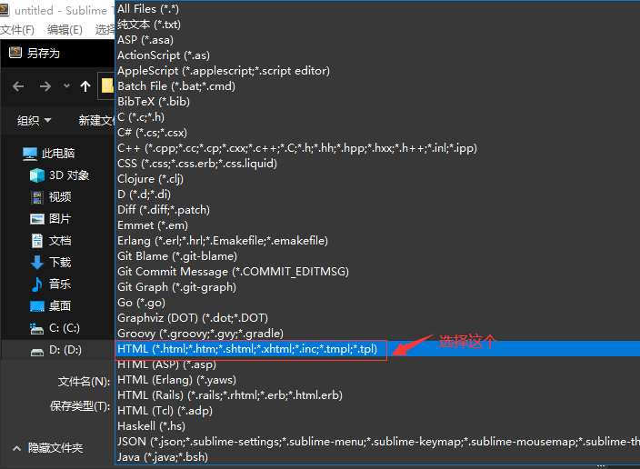
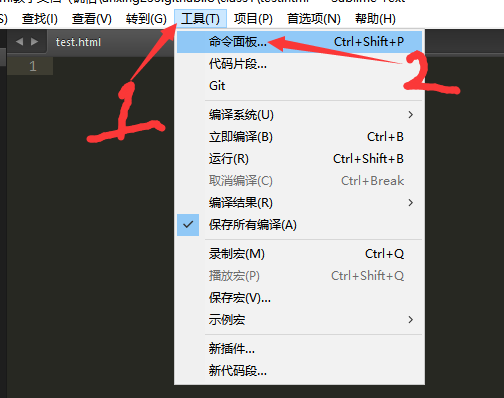
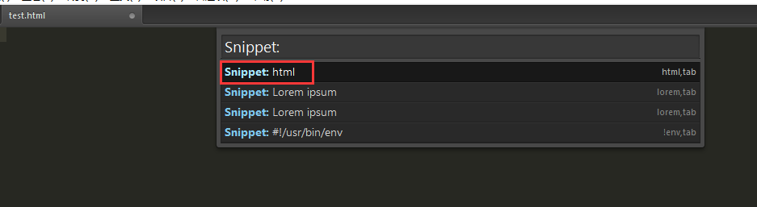
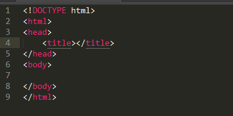
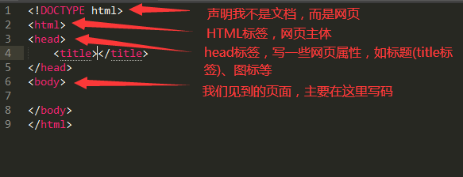

普通的记事本就可以，但因为它太不方便，因此出现了众多的编辑器，比如Visual Studio Code、Sublime Text、HbuilderX。
专业的比如Adobe公司旗下的DW（用起来挺吃电脑的），不过因为教学关系，这里使用Sublime Text来编辑。
首先我们打开Sublime Text，左上角点击“文件(F)”，找到“新建文件(N)”新建空文件；

随后Ctrl+S(或者“文件(F)→保存(S)”)保存，保存类型为HTML类型文件(写文件名时别忘了加上“.html”扩展名)。



在窗口顶部选项栏找到“工具(T)”，找到“命令面板...”，在出现的小框里找到"Snippet: html"，即可调出HTML基础代码。



我们可以看到，HTML主要由这几个部分组成(必须写的)：

PS:这里第一个写错了，<!DOCTYPE html>是声明这个网页是用html5制作的
注意：网站必须拥有的文件是”index.html“（通常都会有此文件来让浏览器读取）
HTML 标记标签通常被称为 HTML 标签 (HTML tag)。
(PS:标签之间可嵌套（能加多少是多少，自己看的懂就行(bushi)）)
HTML网页是由元素定义的
| 开始标签 | 元素内容 | 结束标签 | 描述 |
|---|---|---|---|
| <p> | 这是一处段落 | </p> | 元素显示的是一处段落 |
| <a href= "index.html"> | 这里跳转链接 | </a> | 元素显示的是一处可跳转的链接或者其他地方 |
| <br /> | 换行 |
<html>
<body>
<h1>我的第一个标题。</h1>
<p>这是我的第一个段落。</p>
<br />
<img src="../img/class1/sample.jpg"/>
</body>
</html>
点击这里查看效果
<html>
<body>
<p>这是我的第一段段落。</p>
</body>
</html>
<html> 元素定义了整个 HTML 文档。
<body>
<p>这是我的第一段段落。</p>
</body>
<body> 元素定义了 HTML 文档的主体。
<p>这是我的第一段段落。</p>
这个 <p> 元素定义了 HTML 文档中的一个段落。<br />
<img src= "ImginePath" />
<img />标签插入图片。